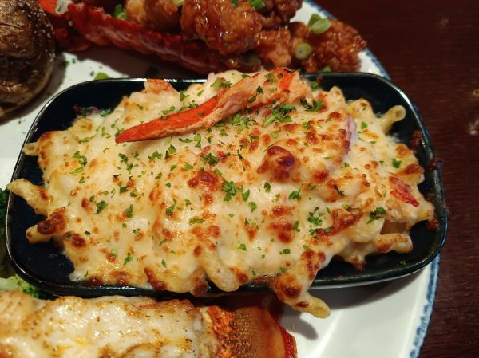

Potatoes & Broccoli au Gratin

Photo: Red Lobster Lover Joe twitter:RLLoverJoe (Public Domain)
A lightened potato-and-broccoli casserole: chunky mashed baking potatoes blended with ricotta, fat-free sour cream, dill, and broccoli, topped with fat-free Cheddar and baked.
Directions
- Heat oven to 375 degrees. Coat 7 by 11 inch baking dish with cooking spray.
- Cook potatoes in boiling water 15-20 minutes. Drain over a bowl to reserve 1 cup cooking liquid. Return potatoes and liquid to pan; mash until slightly chunky. Stir in broccoli, onion, ricotta, dill, salt, red pepper, sour cream. Spoon mixture into dish. Bake 35 minutes. Sprinkle with Cheddar cheese. Bake 5 minutes or until cheese melts.
- Heat the oven to 375 degrees. Coat a 7 by 11 inch baking dish with cooking spray.
- Cook the potatoes in boiling water 15-20 minutes. Drain over a bowl to reserve 1 cup of the cooking liquid.
- Return the potatoes and the reserved liquid to the pan; mash until slightly chunky.
- Stir in the broccoli, onion, ricotta, dill, salt, red pepper, and sour cream.
- Spoon the mixture into the prepared baking dish.
- Bake 35 minutes.
- Sprinkle with the shredded Cheddar cheese. Bake 5 minutes more, or until the cheese melts.
Goes well with
https://lizotte.cool/recipe/potatoes-broccoli-au-gratin.html